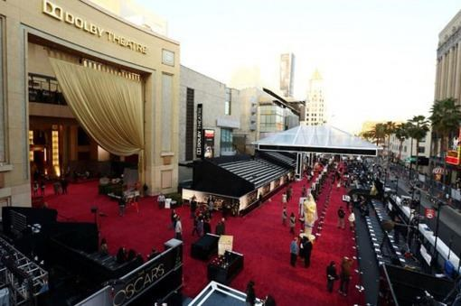
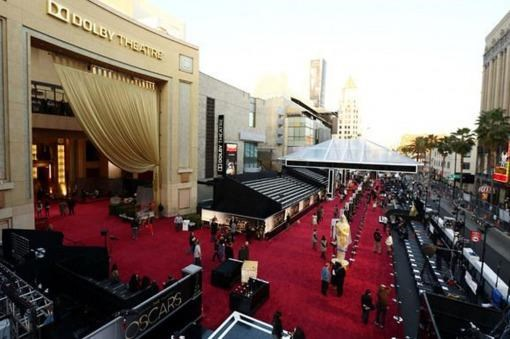
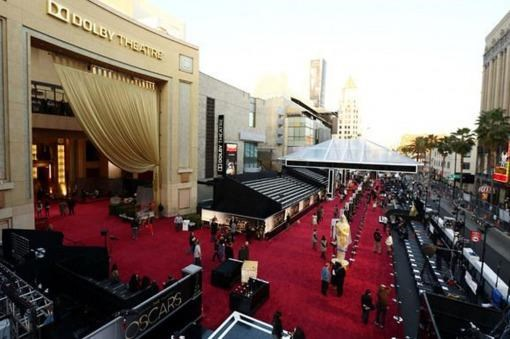
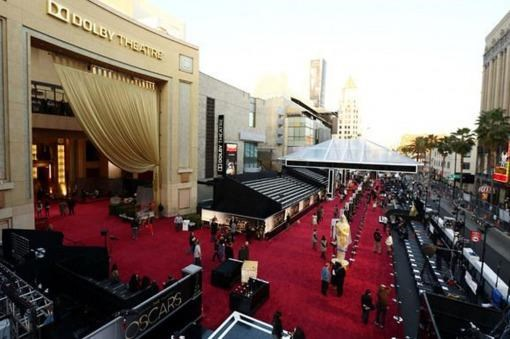

Hay varias leyendas en torno al origen del nombre de estos premios. La primera (y más probable) es que fuese Margaret Herrick, bibliotecaria de la Academia y más tarde directora ejecutiva, quien bautizó a la figura como Oscar por primera vez al afirmar que el caballero de la espada “se parecía a su tío Oscar”. Desde entonces la Academia empezó a referirse al premio de esa forma de manera informal. El nombre se popularizó en 1934, cuando un afamado columnista, Sidney Skolsky lo usó en su columna para hablar del Premio a la Mejor Actriz para una joven Katharine Hepburn. No sería hasta 1939 cuando la Academia utilizó el término “Oscar” de forma oficial. Otra leyenda apunta a un origen distinto. Hay quien afirma que fue la mismísima Bette Davis la que dio nombre a la estatuilla en honor a Óscar Nelson, su primer esposo. No obstante, parece que incluso la propia actriz lo desmintió años después. Otra versión acerca del origen del nombre nace con Eleanor Lilleberg, secretaria ejecutiva de Louis B. Mayer, quien se supone que al ver el galardón exclamó: “¡Se parece al rey Oscar II!”.
Cuando los relojes de la España peninsular den las 2:00 de la madrugada del domingo 12 al lunes 13 de marzo, en el Dolby Theatre de Los Ángeles arrancará la 95ª gala de entrega de los premios de la Academia de Hollywood, los Premios Oscar 2023. Los mejores profesionales de la gran pantalla acudirán con la esperanza de que la noche termine en el escenario, recogiendo una estatuilla y dando un pequeño discurso ante las ávidas cámaras de televisión. Esa estatuilla es, probablemente, el reconocimiento más deseado y anhelado para quienes trabajan en la industria del cine. La escultura, de 38 centímetros de alto y 3,85 kilos, es el fruto de la creatividad de Cedric Gibbons y George Stanley y ha variado de peso, forma y composición a lo largo de los años. Los galardones que se entregarán en la ceremonia de los Oscar de este año son figuras de bronce macizo bañadas en oro de 24 quilates. No obstante, hubo un periodo en el que no fue así: durante la II Guerra Mundial el metal escaseaba en Estados Unidos, ya que se dedicaba mayormente al esfuerzo militar en Europa. Por tanto, la estatuilla estuvo hecha, durante tres años, de yeso pintado.
El Dolby Theatre, anteriormente conocido como Kodak Theatre y temporalmente como Hollywood and Highland Center Theatre,2 es un teatro que se sitúa en la zona de ocio de Hollywood and Highland, en la intersección entre Hollywood Boulevard y Highland Avenue, en Los Ángeles (California, Estados Unidos). El teatro fue diseñado específicamente para esta ceremonia por el estudio Rockwell Group, perteneciente al arquitecto David Rockwell. Su diseño está especialmente pensado para facilitar las transmisiones en vivo desde el gran recinto sin la mínima intromisión para la audiencia. Tiene capacidad para más de 3400 personas, divididos entre la platea y los tres niveles de balcones, y es uno de los escenarios más grandes de Estados Unidos (36,5 x 27,5 m). La sala de prensa situada detrás del escenario tiene capacidad para más de 1.500 periodistas. La entrada al teatro está flanqueada por columnas en las que se muestran las películas ganadoras del premio en la categoría de mejor película desde 1928, y con algunos espacios vacíos para futuras películas ganadoras del premio.